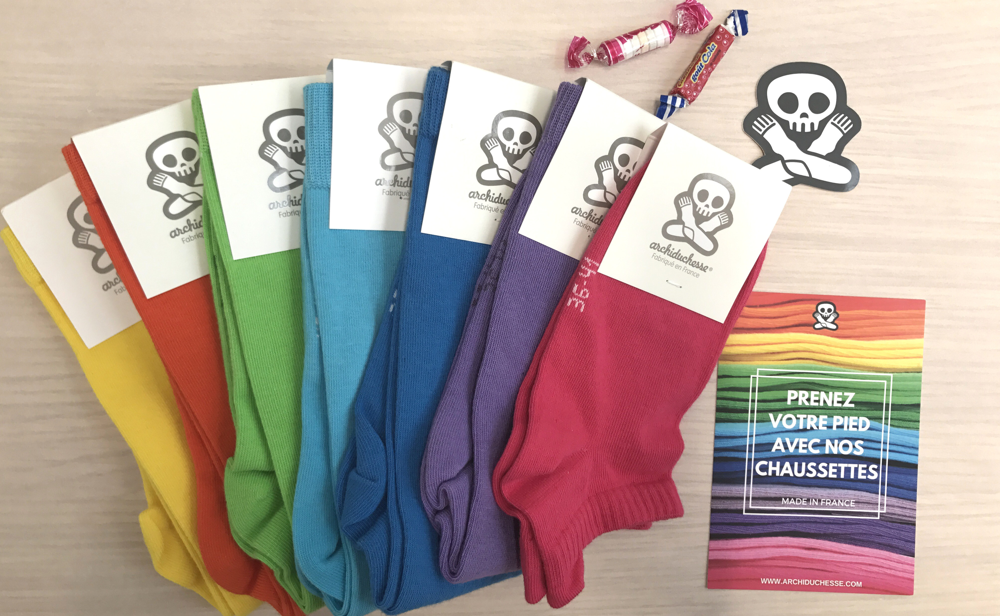

- Shop
- Info
- Blog
- Atelier


- Chaussettes
- Collants
- Espadrilles
- Soldes
Mardi 3 juillet c’était le “International Plastic Bag Free day” (c’est à dire “La journée internationale sans sac plastique”, oui je suis FLUENT en english ). Et comme c’est un sujet qui me tient à coeur et pour lequel notre communauté nous pose souvent des questions, j’avais envie de vous en parler !
Et oui, on en parle pas assez (parce qu’on ne le revendique pas non plus), mais :
"Quand on achète chez Archiduchesse, on achète "responsable" !"
Vous le savez tous, nos produits sont fabriqués en France : nos chaussettes, nos collants, nos espadrilles, … et même notre packaging, nos goodies, nos flyers … La fabrication française c’est un gage de qualité c’est sur, mais ce qui est important aussi c’est que ça permet de garder les emplois en France ! Quand on sait que tout le monde délocalise aujourd’hui, acheter français c’est s’engager pour l’emploi et garder en vie les fabricants français (j’ai l’impression de faire de la politique la, arrêtez moi si je vais trop loin) ! Bon et aussi bien sur, vous limitez vos émissions de CO2 à pas acheter chinois, et ça c’est toujours bien pour la planète !
Nous avons de plus en plus de demandes de clients qui font attention à leur consommation et qui nous demandent des informations sur nos colis, car ils souhaitent limiter leurs déchets. Et bien, quand vous commandez chez nous, voici ce que vous recevez :
La preuve en images (heu… le papier de soie est pas très bien ressorti en photo hein, mais il est en dessous !) :
On est pas encore parfait sur toute la ligne bien sur, on pourrait trouver des choses qu’on ne fait “pas bien”, je pense notamment à l’utilisation de mini bouteilles d’eau au bureau et de gobelet pour le café… Mais on y travaille !
Alors, si vous voulez acheter responsable, pensez à nos chaussettes !